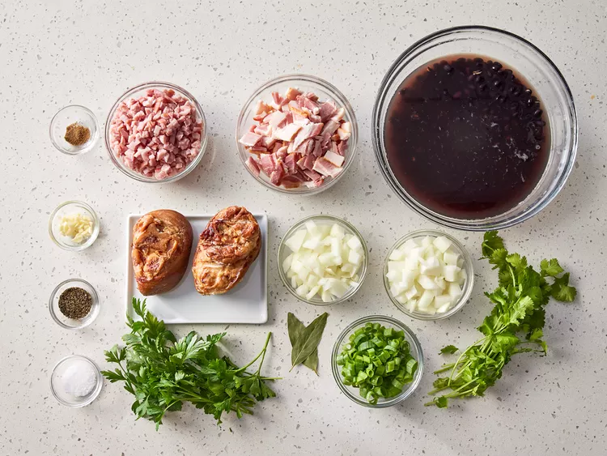
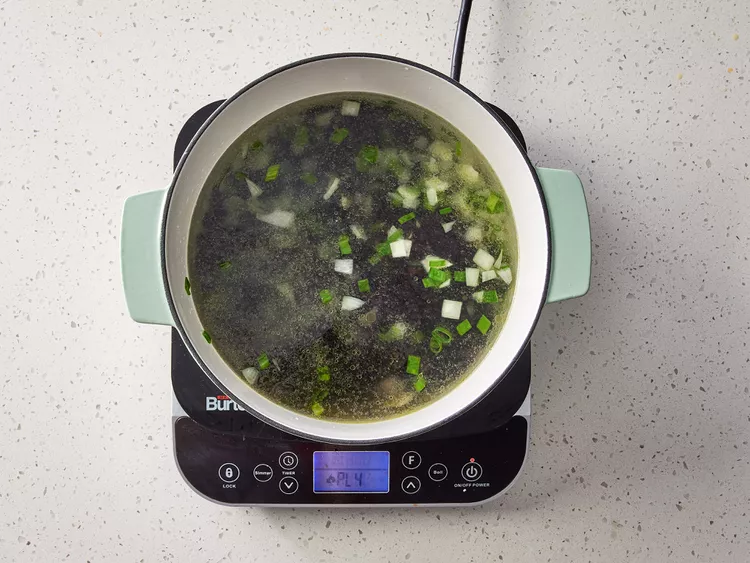
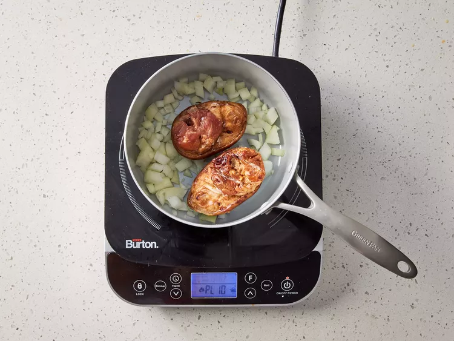
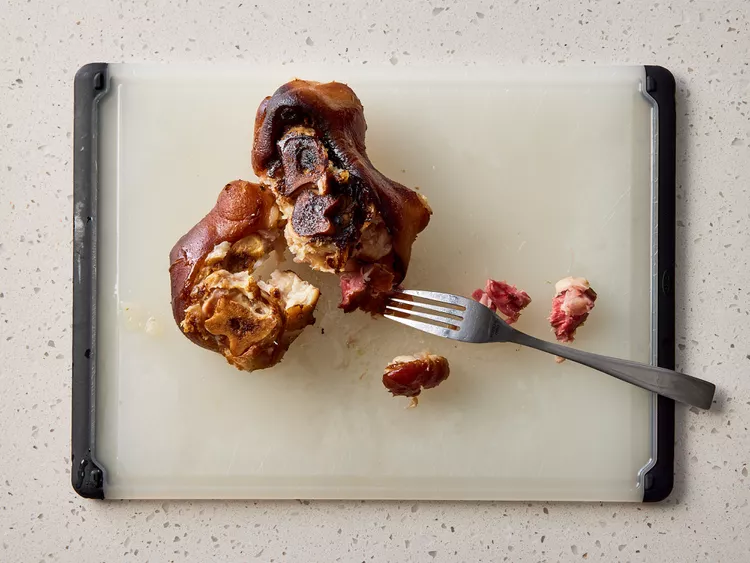
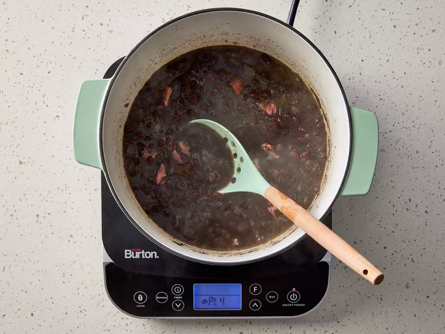
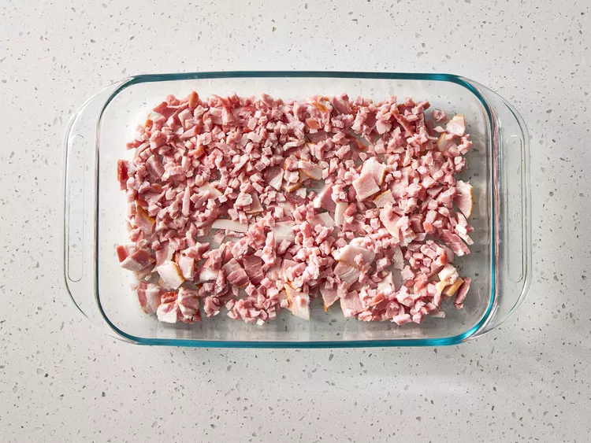
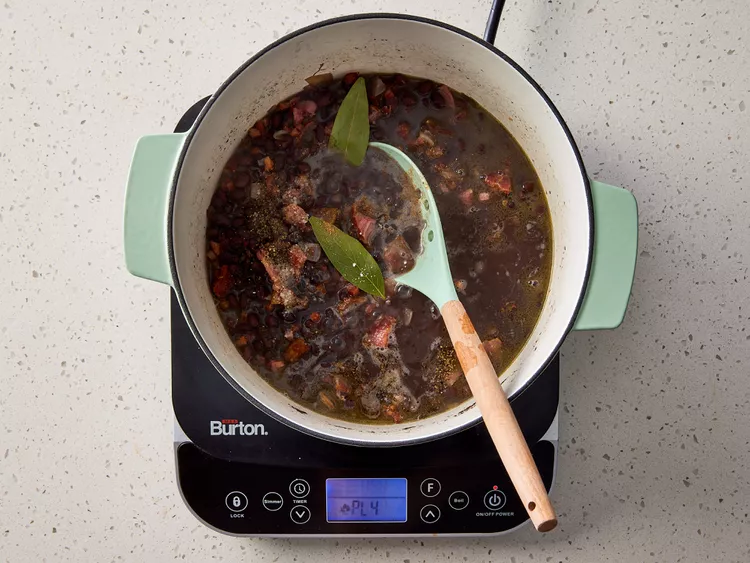
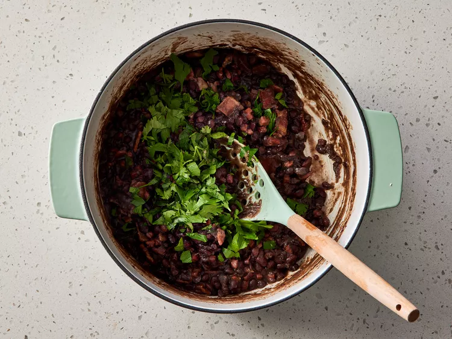

This feijoada recipe is my version of a traditional Brazilian black bean stew that maintains the rich flavors famous in Brazil.
Excellent served over brown rice. Additional meats, including pork loin or smoked sausage, may be added if desired.
- Gather all ingredients

Image credit: Dotdash Meredith Food Studios
- Heat oil in a large pot or Dutch oven. Add 3/4 cup chopped onion,
green onions, and garlic; cook and stir until softened, about 4 minutes.
Image credit: Dotdash Meredith Food Studios
- Pour in soaked beans and fill with enough water to cover beans by 3 inches.
Bring to a boil, then reduce heat to medium-low, and simmer uncovered for 2 hours, or until tender.

Image credit: Dotdash Meredith Food Studios
- While beans are cooking, place ham hocks in a smaller pot with 1/4 cup chopped onion.

Image credit: Dotdash Meredith Food Studios
- Cover with water and simmer until meat pulls off of the bone easily, about 1 hour.

Image credit: Dotdash Meredith Food Studios
- Drain and add to beans. Meanwhile, preheat the oven to 375 degrees F (190 degrees C).

Image credit: Dotdash Meredith Food Studios
- Place ham, bacon, and remaining onion in a baking dish. Bake until mixture is crispy, 15 minutes.

Image credit: Dotdash Meredith Food Studios
- Drain bacon and ham mixture and add to beans. Season with bay leaves, coriander, salt, and pepper. Simmer, uncovered, 30 minutes more.

Image credit: Dotdash Meredith Food Studios
- Stir in chopped cilantro and parsley just before serving.

Image credit: Dotdash Meredith Food Studios